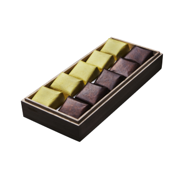
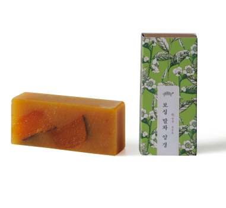
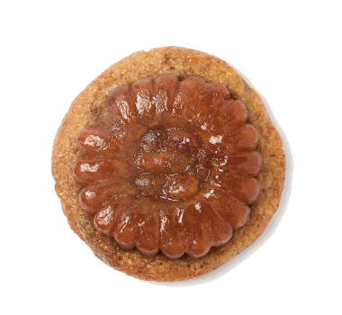
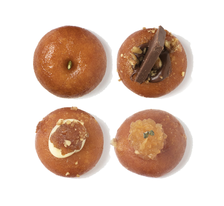
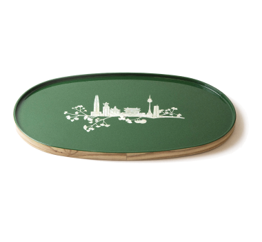
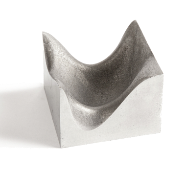

-
우리나라를 찾는 외국인 관광객이나 지방에서 찾아온 내국인 관광객 모두 서울을 방문하면 가장 먼저 찾는 곳이 바로 궁궐이다. 서울은 600년간 이어진 조선시대의 수도였던 만큼 유구한 세월을 거치며 왕이 머물던 궁궐의 모습을 볼 수 있다. 마천루 빌딩이 즐비한 현대적이고 역동적인 광화문 한복판에 우뚝 서 있는 경복궁은 대조적인 모습으로 감탄을 자아낸다. 특히 서울 한복판 사대문 안에 조선시대 왕궁이었던 궁이 5개나 있다. 가장 대표적인 궁궐인 경복궁과 덕수궁, 세계문화유산에 등재된 창덕궁과 창경궁, 경희궁이다. 날씨가 좋은 날에는 한복을 곱게 차려입고 궁궐에서 기념사진을 찍는 관광객들의 모습을 흔히 볼 수 있다.
-
그렇다고 해서 서울이 역사적인 유적지만 풍부한 곳은 아니다. 서울의 최대 경쟁력은 산과 강 등 자연을 즐길 수 있는 곳이라는 점이다. 런던의 템스강이나 파리의 센강처럼 세계 주요 도시들이 강을 끼고 있지만 한강처럼 규모가 큰 곳은 없다. 템스강의 폭이 265m 정도인데, 한강은 1km로 거대하다. 또 여의도, 반포, 뚝섬, 난지한강공원 등 특화된 공원과 더불어 시설을 잘 갖춘 수변 공원이 자리 잡아 한강의 매력을 충분히 즐길 수 있다.
-
현대적인 랜드마크가 궁금하다면 동대문디자인플라자가 제격이다. 이라크 태생의 건축가 자하 하디드가 설계한 이곳은 외부와 내부에 직선이나 벽이 없이 부드럽게 이어지는 디자인이 마치 미래에서 온 듯한 착각을 불러일으킬 정도로 신선한 모습이다. 동대문디자인플라자는 뮤지엄과 라운지, 기념품을 구입할 수 있는 스토어 등으로 구성되어 있다.
이렇게 서울은 전통과 현대, 자연과 인공적인 랜드마크를 한곳에서 만나며 역동적이고 다채로운 매력을 만끽할 수 있는 곳이다.
레트로 열풍과 건강을 생각하는 트렌드가 어우러지면서 전통 음식을 새롭게 재해석한 디저트가 인기를 끌고 있다. 할머니, 할아버지의 음식이라고 생각했던 양갱, 약과, 떡 등이 그 주인공이다. 유명 약과 상품은 편의점에도 출시되었고, 백화점이나 카페 등 레트로 디저트 전문점에서도 쉽게 맛볼 수 있다.
|  |
①합 약과
제대로 된 레트로 디저트를 맛보려면 병과점 합(合)을 추천한다. 합의 신용일 파티시에는 프랑스 제과 학교에서 배운 기술을 한식 디저트에 접목했다. 합에서 판매하는 음식은 한입 크기라 부담 없이 먹을 수 있다. 약과의 경우 유자조청을 입힌 향긋한 유자약과와 간장으로 짭조름한 맛을 더한 간장약과, 두 가지 맛이고 주악은 살짝 알싸한 생강 향이 나는 생강조청을 넣어 먹는 순간 달콤한 조청이 배어 나온다. 호두정과, 증편, 인절미, 시루떡 등 전통 디저트를 고루 맛볼 수 있다는 것도 장점이다. 포장 상자가 고급스러워 선물용으로도 그만이다.
|
|  |
②금옥당 양갱
금옥당은 수제 양갱만 전문으로 하는 곳이다. 깔끔한 상자에 화려한 문양이 프린트된 포장지로 감싼 수제 양갱은 고급스러운 분위기가 가득하다. 한천과 설탕을 넣어 굳힌 투명한 젤리 형태의 전통 디저트로 익숙한 밤 양갱부터 밀크티, 피스타치오 양갱까지, 10가지가 넘는 다양한 맛의 양갱을 맛볼 수 있다. 설탕 양을 줄여 은은한 단맛에 부드러운 식감이 매력적이다.
|
|  |
③이웃집통통이 약과쿠키
차례상에 올리는 전통 과자인 약과는 레트로 디저트 열풍의 선두 격이다. 유명 약과를 구매하기 위해서는 줄을 서거나 일찍 서두르지 않으면 품절되기도 한다. 이웃집통통이 약과는 일찍부터 유명세를 얻어 편의점에 출시되었을 정도다. 전통적인 약과가 아니라 이색적으로 커다란 쿠키 위에 약과를 얹어 전통과 현대의 맛이 조화를 이룬다. 기분 좋은 단맛에 부드러운 식감이 돋보인다.
|
|  |
④연리희재 개성주악
주악은 찹쌀가루와 밀가루를 섞은 뒤 막걸리를 넣고 반죽해 동그랗게 빚은 다음 기름에 튀겨낸 떡의 일종이다. 북한의 개성에서 많이 먹어 보통 ‘개성주악’이라고 불린다. 고려시대 수도 개성에서 약과와 주악이 발달했던 만큼 오랜 역사를 자랑한다. 연리희재는 일반적인 주악과 달리 초콜릿, 크림치즈, 과일 등을 토핑으로 얹어 젊은 세대의 입맛을 공략했다. 한입 베어 물면 기름과 조청이 흘러나올 정도로 촉촉한 맛이 매력적이다.
|
대한민국의 수도 서울로 여행을 왔다면 여행의 추억을 좀 더 오래 간직하도록 해줄 문구를 기념품으로 구입하는 것은 어떨까. 서울의 역사 깊은 고궁과 N서울타워 등 대표 관광지의 모습을 담은 노트와 수첩, 필기구 등은 사용할 때마다 서울의 오늘을 만날 수 있도록 해준다.
|  |
①서울 나전 트레이
‘서울 나전 트레이’에는 롯데월드타워, N서울타워, 이순신 장군상 등 서울의 랜드마크와 서울을 상징하는 나무인 은행나무의 은행잎을 새겨 넣었다. 한강을 표현한 은백색 나전 문양에 남산을 뜻하는 초록색으로 바탕색을 더한 트레이는 컬러감이 고급스럽다. 차를 마시거나 다과를 즐길 때 유용하게 사용할 수 있을 듯.
|
|  |
②B-Side DDP 인센스워머
서울의 랜드마크인 동대문디자인플라자의 실험적 디자인에서 영감받아 제작한 인센스워머다. 동대문디자인플라자의 유려한 곡선형 건물 외관을 떠올리게 하는 디자인에 스틸 소재를 사용해 건축적 특징을 잘 담아냈다. 인센스를 놓아두어도 되고 책상 위에 올려두면 인테리어 소품으로도 훌륭하다.
|